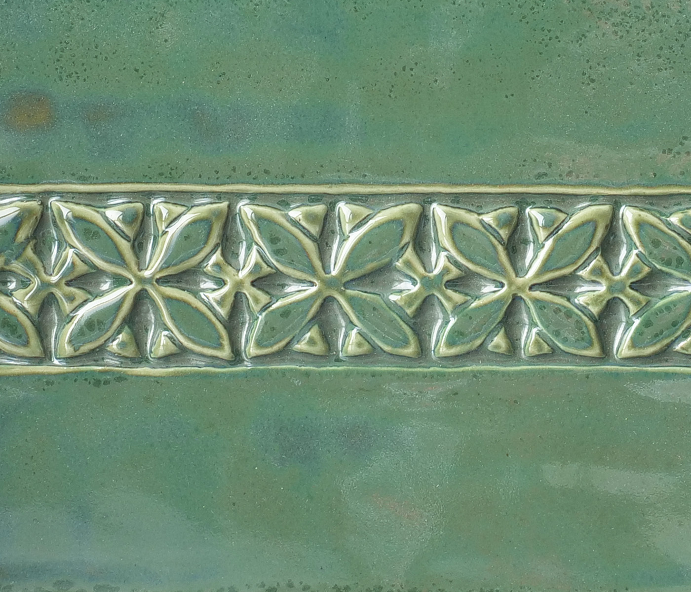

Commercial
AMACO Potters Choice
A broad commercial line explicitly positioned for reduction-like effects in oxidation with strong layering potential at cone 5-6.
AMACO
Potters Choice
Cone 5-6
Effect
Finish tags: fluid, varied surfaces, layering
Effect tags: reduction-look, historic glaze references, movement
Atmosphere: oxidation
Use Notes
Application: AMACO positions this line as a cone 5-6 system with layering charts. The line is intended for bisque fired to cone 04 and emphasizes fluid color and surface variation.
Food safe: Not specified
Sources: amaco-potters-choice

Notes
This is one of the strongest commercial entry points for woodfire-adjacent electric surfaces because the brand is explicit about reduction effects in oxidation.
- Best use case: potters who want a large matrix of buyable options before committing to raw-material mixing.
- Strong next step: build a focused shortlist of the most ash-like and tenmoku-like colors in the line.